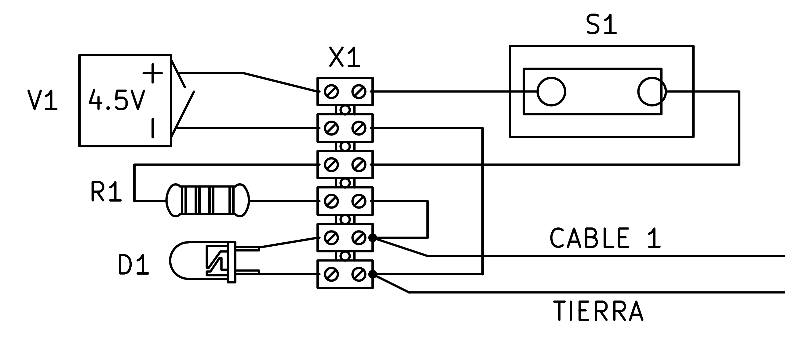

2. Telégrafo de dos hilos¶
En esta práctica vamos a realizar un telégrafo con dos estaciones emisoras-receptoras de código morse.
Cada estación tendrá un pulsador con el que enviar mensajes y un led que recibirá los mensajes de la otra estación.
El funcionamiento es "semi-duplex". Las dos estaciones pueden emitir mensajes y recibir mensajes, por eso se denomina duplex. Pero las estaciones no pueden emitir mensajes las dos al mismo tiempo, y por eso se denomina semi-duplex.
La ficha para realizar la actividad tiene por una cara el esquema sin terminar, para que se complete a lápiz. Por la otra cara está el esquema completo ya terminado.